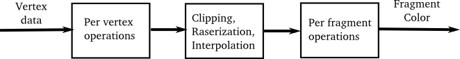
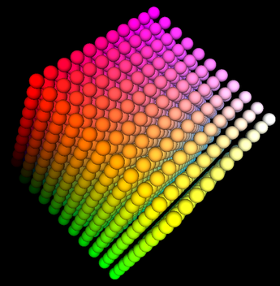

We have finished our short look at OpenGL 1.0. We will return to OpenGL later in the course to work with a more modern version. But before we put aside the original version, we should ask what was wrong with it? What were some of the shortcomings of OpenGL 1.0, and how have they been addressed? To answer that, you need to know a little more about how OpenGL works.
OpenGL was designed as a client/server technology. That is, there are two parts to an OpenGL application, the client and the server. The server is the part that actually performs graphics computations and creates the image data that will be displayed. The client is the part of the application that decides what to draw, and sends commands and data to the server to get the drawing done.
The client and the server part of an OpenGL application can actually run on two different computers, communicating over a network. More commonly, the client application runs on a computer's CPU and the OpenGL server runs on dedicated graphics hardware in the same computer as the CPU. The graphics hardware might be on a card that plugs into the motherboard, or on a chip soldered into the motherboard, or even part of the same chip that contains the CPU. In any case the graphics hardware is often referred to as a GPU or Graphics Processing Unit.
A modern GPU can compute graphical images with remarkable speed, but it's still a program running on the CPU that decides what to draw. This means that the CPU and the GPU—the client and the server—have to communicate, and that communication is generally done across a relatively slow communications channel. Some design considerations in the evolution of OpenGL have been driven by a desire to cut back on the amount of communication that is needed. We'll look at some examples of this below.
You also need to know that OpenGL uses a rendering pipeline. This means that the data that is used to produce an image goes through a series of processing stages. Here is an extremely simplified version of the pipeline:

In this illustration, the data entering the pipeline on the left consists of coordinates and other attributes for all the vertices in a primitive. Attributes include things like normal vectors, color, material, and texture coordinates. (And a primitive, remember, is something specified by one of the constants GL_TRIANGLES, GL_LINE_LOOP, etc.) The per-vertex operations involve things like transforming the vertex coordinates into the clip coordinate system, computing a color for the vertex based on the lighting equation, and applying a texture transform to the texture coordinates. This data is passed on to the next stage in the pipeline. Note that at this point all we have is a set of data associated with each of the vertices of a primitive.
The next stage is shown as "Clipping, Rasterization, Interpolation," although this could really be considered to be several stages. Clipping is where any part of the primitive that lies outside the view volume is discarded. After that, the primitive has to be converted into a set of pixel colors. The GPU has to figure out which pixels lie inside the primitive; this is rasterization. It also has to take the data that it has for vertices and interpolate them to get data for each pixel. This applies, for example, to the final colors that were computed for the vertices and to the texture coordinates that were specified for each vertex. The GPU has these values for the vertices, but to continue processing, it needs a value for each pixel.
All this data is input to the next stage, "Per fragment processing." A fragment is OpenGL's term for a pixel at this stage of the processing. The job of this part of the pipeline is to produce a color value for the fragment. For example, this might involve combining the color value interpolated from the vertices with another color value computed from a texture. The fragment that is output from this stage of the processing is destined for one pixel in the image, but the fragment color doesn't necessarily become the final color of that pixel. There is further processing to decide what to do with the color. For example, if the depth test is enabled, and the fragment doesn't pass the test, then the color will simply be discarded. Or if the fragment color has an alpha component less than 1.0, and if transparency is enabled, then the fragment color will be blended with the pixel color rather than replacing it.
In any case, after all the data for the primitive has gone through the rendering pipeline, the end result is that the primitive has been "rendered" into the image.
Modern GPUs are extremely fast. One of the reasons for their speed is that much of the computation in the rendering pipeline can be done in parallel. In particular, the computations done for one vertex are independent of the computations done for other vertices, so all of the per-vertex processing could be done in parallel. Similarly, the computations for different fragments are independent, so per-fragment processing can also be done in parallel. GPUs are multiprocessors that can do these operations in parallel, with up to hundreds of processors in high-end hardware. There is also a lot of parallelization of texture processing, which is a major component of rendering computations.
One of the problems with using glBegin/glEnd to construct primitives in OpenGL is the large amount of commands and data that have to be sent from the CPU to the GPU. Think about drawing a sphere—or better yet, 1331 spheres. Here is a picture showing 1331 differently colored spheres arranged into an 11-by-11-by-11 cube:

This is a screenshot from the sample program ColorCubeOfSpheres.java (or the C version, color-cube-of-spheres.c). The program draws the same set of spheres using five different techniques, and it reports the time it takes to render the image in each case. I will discuss each technique conceptually, without telling you how to implement it. For that, you will have to look at the program or do some research into OpenGL on your own.
The first technique for drawing the spheres is to use a subroutine that can draw one sphere, using glBegin/glEnd, and to call that subroutine 1331 times. Each sphere is drawn using 32 "slices" and 16 "stacks" and requires the generation of 1056 vertices along with a normal vector for each vertex. (The same vertex can be generated several times, since it occurs in several primitives.) For all 1331 spheres, this gives a total of 1056*2*1331, or 2,811,072 calls just to the routines glVertex3f() and glNormal3f(). This would probably be a completely unreasonable number if each call to an OpenGL routine sent a separate message from the CPU to the GPU and waited for the command to be carried out on the GPU before returning. In fact, a call to a routine such as glVertex3f returns immediately without waiting for the command to be sent to the GPU and executed. The commands can be streamed quickly to the GPU or sent in large batches in parallel with the execution of the program on the CPU. However, this means that when all the code for drawing an image has been executed on the CPU, it might be some time later until the GPU has actually received and carried out all the commands!
OpenGL has a function glFlush() that will send any commands that are waiting to be sent to the GPU; glFlush is called automatically by the glutSwapBuffers() function in C, which is usually called at the end of the display function in a GLUT program that uses double buffering. A GLUT program that uses single buffering should call glFlush() at the end of the display function as well as at the end of event-handling functions that do any drawing. JOGL takes care of calling glFlush automatically. glFlush waits for all commands to be sent to the GPU but doesn't wait for the GPU to carry them out. There is another OpenGL function, glFinish(), which does that. It is rarely necessary to call glFinish, but my color-cube-of-spheres program does so to make sure that the rendering time that it measures includes all the time that the GPU works on the image.
The problem with my first way of drawing the spheres is that the CPU does an awful lot of redundant computation. Every time the program draws a sphere, it recomputes the vertex coordinates and normal vectors, which adds up to quite a bit of work. The second technique for drawing the spheres computes the vertex and normal data just once and stores the computed data in an array. When drawing a sphere, the data is taken from the arrays rather than recomputed. The functions glVertex3f and glNormal3f are still used along with glBegin/glEnd to send the data to the GPU. The measured render time does not include the computation of the data, so it gives a better measure of the actual work done by OpenGL. In trials on several machines, I found that the second technique was about twice as fast as the first. The lesson here is not about OpenGL but about the advisability of avoiding massively redundant work on the CPU.
Even using the second technique, the program is still calling a huge number of OpenGL routines to draw the image. And it executes exactly the same series of commands for each of the 1331 spheres. It seems silly to send the same commands and data to the GPU over and over. Even in OpenGL 1.0, there is a way to avoid this: display lists. A display list is simply a list of OpenGL commands that is saved in the GPU's memory. The CPU sends a series of commands to the GPU just once, and the GPU stores the commands in a display list. The CPU can then use a single OpenGL command, glCallList(listID), to tell the GPU to execute the commands in the display list. The third technique in my program is to store all the commands for drawing one sphere in a display list, so that it will take only one OpenGL command to draw each sphere (plus a few more to set up the color and transformation for the sphere).
Display Lists are quite effective. In all my trials, display lists were either the fastest rendering technique, or approximately tied for being the fastest. One problem is that they can only be used if you want to repeat the exact same sequence of commands (with the same data).
We are about to move beyond OpenGL 1.0. One of the problems with glBegin/glEnd is the large number of OpenGL function calls that it takes to draw a primitive that has a large number of vertices. A sphere in my program is made up of 16 primitives, one for each "stack" of the sphere. Each primitive has 66 vertices, and so requires 66 calls to glVertex3f() and 66 calls to glNormal3f(), in addition to calls to glBegin() and glEnd(). Already in OpenGL 1.1, there is a way to replace all of those function calls with just one: a call to glDrawArrays(). To use that function, all of the vertex data for a primitive is computed and stored in arrays. Then glDrawArrays() is called just once to draw the primitive, pulling the data it needs from the arrays. glDrawArrays() requires a significant amount of code to set up and use, and it is more complicated than using glBegin/glEnd. And it still sends the same data to the GPU. It's advantage is that it greatly decreases the number of OpenGL function calls and therefore the number of commands sent to GPU and also, possibly, that it sends all the data for those commands in one big chunk. The fourth technique used in my program is to use glDrawArrays() to draw the primitives that make up the spheres. This should be compared to the second technique, which stored the data in arrays but used glBegin/glEnd to process the data. Interestingly, I saw very little difference between the two techniques in C, but with JOGL, glDrawArrays() was almost twice as fast.
(I should note that in JOGL, glDrawArrays() can't work with regular Java arrays. Instead, you can create objects called "buffers" to hold the data.)
A problem with glDrawArrays() in OpenGL 1.1 is that the data arrays still exist on the client side (in the CPU's memory), and the data is sent to the GPU when glDrawArrays() is called. If you want to draw the same primitive more than once, you have to resend the data for the primitive to the GPU each time you draw it. It would be nice to be able to store the data on the GPU, in much the same way that display lists are stored on the GPU. This became possible in OpenGL 1.5, with the introduction of vertex buffer objects. A vertex buffer object, or VBO, is a block of memory on the GPU that can be used to hold data in much the same way as an array. There are OpenGL commands to create and delete VBOs and to transfer data from an array on the CPU side into a VBO on the GPU. You can configure glDrawArrays() to take the data from a VBO instead of from a client side array. This means that you can send the data once to the GPU and use it in any number of calls to glDrawArrays(). The fifth technique uses VBOs. The data needed to draw a sphere is stored in two VBOs, one for the vertex coordinates and one for the normal vectors, and glDrawArrays() is configured to take its data from the VBOs. With that setup, glDrawArrays() is used in the same way as in the fourth technique. The difference is that the data doesn't have to be retransmitted to the GPU every time a sphere is drawn. As expected, this speeds things up significantly. In fact, in my trials, rendering the spheres using VBOs took about the same amount of time as rendering them using display lists (or in some cases a little slower).
If you try the program on your own computer, the rendering times for the five techniques will depend on the details of the hardware and software on your computer. However, the data should show why glBegin/glEnd fell out of favor despite being the easiest way to draw with OpenGL.
Another problem in OpenGL 1.0 relates to the function glTexImage2D(). This function sends image data from the CPU to the GPU to be used as a texture. If you want to switch to a different texture, you need to call glTexImage2D() again. But if you reuse the same texture several times with multiple calls to glTexImage2D(), you are sending and resending the same data from the CPU to the GPU. You should be able to guess how the redundant data transfer can be avoided: OpenGL 1.1 introduced texture objects, which work similarly to vertex buffer objects. A texture object can be stored on the GPU. It contains image data for a texture as well as values for texture parameters associated with that texture. An OpenGL program can create texture objects and configure each one with an image and with texture parameters. Then, when rendering a primitive, you just have to tell the GPU which texture object to use on that primitive. That is, the texture data for each texture is loaded only once, and then you can switch from one texture to another without resending the texture data to the GPU. Specifying which texture object to use is called binding the texture object. You still use glTexImage2D (or glCopyTexImage2D) to load image data into a texture, but now the data that you specify goes into whatever texture object that is currently bound. To use a texture object on a primitive, you just have to bind the texture again before drawing the primitive.
The single texture in OpenGL 1.0 becomes one of many possible texture objects in OpenGL 1.1, the one that is bound by default when the program starts. So, we really have been using a texture object all along, without mentioning it. In fact, in JOGL, an object of type Texture uses a texture object automatically, and when you use several Textures in a program, you are actually using multiple texture objects. (You might remember that to apply a texture to an object in JOGL, you have to call the Texture's bind() method; doing so binds the associated texture object in the OpenGL sense.)
OpenGL was already quite complicated in version 1.0, and became more so as it evolved. There are many things that OpenGL 1.0 didn't do, or didn't do well. It didn't handle shadows; illumination is not blocked by an objects in the scene. It didn't do reflections of objects on other objects. It's method for simulating lighting—applying the lighting calculations only at the vertices and interpolating the results to interior points—was fast but not accurate (for example, a specular highlight that should occur in the middle of a primitive but not at the vertices will be missed entirely). Specular highlights on textured objects were not handled well, and there were other problems with textures. Translucent objects were difficult to handle, and refraction of light passing through translucent object was pretty much impossible.
With time, new features were added to OpenGL to help with some of these problems. For example: separate specular color to improve specular highlights on textured objects, cube mapping to show the reflection of an environment on an object, depth textures to help with computing shadow effects, anisotropic filtering to improve the application of textures, and many other improvements.
The problem is that no matter how many features you add, there will always be demands for new features—as well as complaints that all the new features are making things too complicated! OpenGL was a giant machine, with new pieces always being tacked onto it, but still not pleasing everyone. The real solution was to make the machine programmable.
The original OpenGL used what is called a fixed-function pipeline. That is, data and commands pass through a rendering pipeline that implements a certain set of features. It is possible to turn features on and off and set parameters that control how they are applied, but as a graphics application programmer, you can only do things that are already built into the pipeline.
The solution was to provide a programmable pipeline. This means that instead of just relying on routines that are already implemented in the rendering pipeline, a graphics application programmer can write their own routines, which can be executed as part of the pipeline.
A programmable pipeline was first introduced into OpenGL in 2004, as part of OpenGL 2.0. A programming language named GLSL (OpenGL Shading Language) was introduced for writing code to be executed as part of the rendering pipeline. GLSL is similar to C, with some omissions to deal with the limitations of graphics hardware and some additions to make it easier to program graphics computations. Programs written in GLSL are called shaders. Only certain stages in the pipeline were made programmable. Originally, there were two kinds of shader: vertex shaders and fragment shaders. (More recently, "geometry shaders" have been added.) A vertex shader is a GLSL program that replaces the "per-vertex processing" part of the pipeline. The input to a vertex shader includes vertex coordinates and other vertex attributes as well as all the OpenGL settings that affect the per-vertex processing. The output includes the vertex coordinates transformed into clip coordinates and a color and texture coordinates for the vertex. This output is passed to the next, non-programmable stage of the pipeline. Similarly, a fragment shader replaces the "per-fragment processing" stage of the pipeline. Note that a shader completely replaces a stage of the fixed-function pipeline, and is responsible for doing all the required computations for that stage. For example, if the graphics application in which it is used requires lighting, then the vertex shader must implement the lighting equation calculations.
The idea of a programmable pipeline was very successful—so successful that in OpenGL 3.0, the fixed-function pipeline was deprecated (meaning that its use was discouraged). And in OpenGL 3.1 the fixed-function pipeline was removed from the OpenGL standard, although it is still present as an optional extension. In practice, the fixed function pipeline is still supported in desktop versions of OpenGL and will probably continue to be available in the future. On the embedded system side (for things like smart phones and tablets), OpenGL ES 1.0 uses only a fixed function pipeline, and OpenGL ES 2.0 and 3.0 have only a programmable pipeline. WebGL, the version of OpenGL for use in web browsers, is based on OpenGL ES 2.0 and has no fixed function pipeline.
We will use WebGL later in the course, and you will learn more about GLSL, shaders, and programmable pipelines. First though, we will spend some time with Blender, an application program for 3D modeling and animation, and with Three.js, a high-level JavaScript API for 3D web graphics.